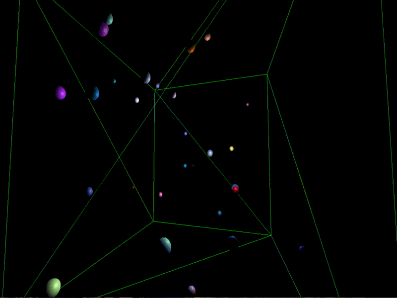
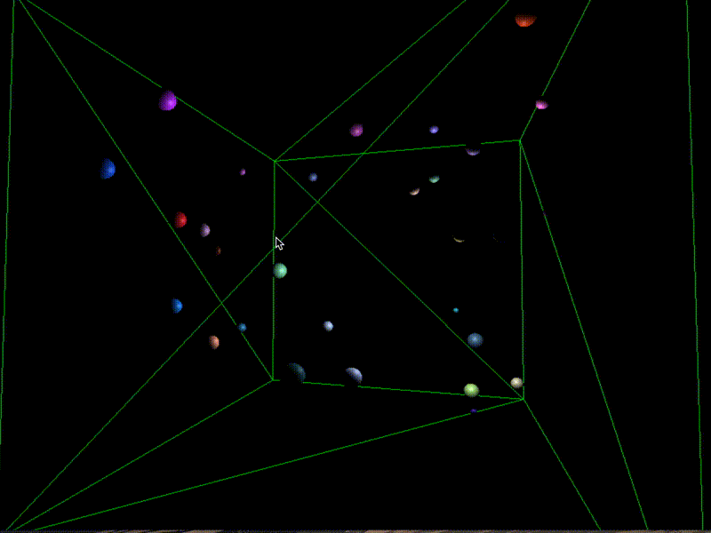

Final Project: Barnes-Hut Simulation
Summary of Work
The following is a summary of the work I completed for the final project.
First, some details, as requested:
- Name: Wil Thomason
- Computing ID: wbt9mh
In short, this is an implementation of the Barnes-Hut n-body simulation approximation algorithm in 3D using Three.js and WebGL.
It implements both a "naive" direct computation of the forces between particles and the Barnes-Hut algorithm for approximating the same.
As well, it has realistic elastic collisions between particles, and accurately simulated momentum, etc.
The n-body problem
The n-body simulation computed here is most based off of the n-body problem from physics, which seeks to compute the interactions between n-many
objects due to gravitational forces.
In our case, we wish to efficiently compute, for a large number of objects of varying masses, the resulting motion as accurately as possible.
For simplicity of calculation, we use spheres as our objects. Given that the n-body problem is commonly posed in an astrophysical context, this is
a reasonable simplification.
Octrees
Earlier in the class, octrees had been discussed as a means of accelerating raytracing. They subdivide a 3D space into nested octants, effectively generalizing
a binary search tree.
The Barnes-Hut approximation algorithm for the n-body problem, as implemented here, relies on the use of an octree for its speed.
The primary operation we have to implement for the octree is insertion; certain implementations of Barnes-Hut also use deletion to reshape the tree rather than
rebuilding it for each iteration, but we choose not to do so.
Octree insertion works as follows: For a given node and item to insert, we first check that the current node is a leaf. If it is not, we determine which of its child
octants the item belongs in by testing its central coordinate, and recurse on the node representing this octant.
If the current node is a leaf, we check to see if it is empty. If it is empty, then we insert the item and finish. However, if there is already an item in this location,
we must create a new layer to the tree. We create the eight children of the current node, making it an internal node, and for both the new item and the old, determine which of the
new nodes will hold them and recurse with them to that node.
The Naive Approach
The naive approach to the n-body simulation is, as the name may imply, quite straightforward. For each of the n particles, we use the formula for gravitational force
between two objects from classical mechanics to find the force in each of the three dimensions from each of the other particles. Applying the principle of superposition,
we are able to compute the final force on the particle, and update its velocity, acceleration, and position vectors accordingly.
While this approach is exact (down to errors due to machine number precision), it becomes unwieldy and slow for larger numbers of particles, as it requires n^2 computations.
Below, we show some images of the simulation running with the naive algorithm.


The Barnes-Hut Algorithm
The Barnes-Hut algorithm attempts to approximate to within a reasonable degree of accuracy the n-body simulation. It is a common simulation technique for this, and allows larger numbers of particles to be successfully tracked in real-time. The algorithm uses only n*log(n) computations by virtue of its reliance on the aforementioned octree data structure.
When computing the force acting on a given particle, the Barnes-Hut algorithm begins recursing down from the root of the octree, until either it reaches a leaf, in which case we perform the usual gravitational force computation, or it reaches a node for which the ratio between the width of space the node represents and the distance between the node's center of mass and the center of mass of the particle is below a given threshold.
In this second case, we again perform the standard gravitational force computation, but with the center of mass and total mass of the node, rather than with the actual particles it contains. This is where the algorithm's savings arise.
The threshold is a sort of tunable parameter for the algorithm; set lower, it provides a more accurate but slower simulation, while a higher setting results in a faster but less accurate simulation.
Below, we show some images of the simulation running with the Barnes-Hut algorithm.
